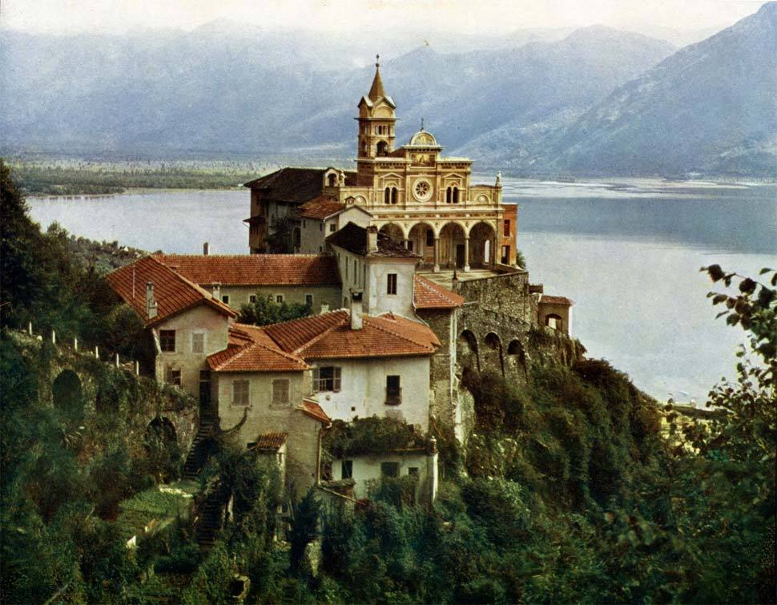

Tue, 17 Aug 2010 03:04:53 ·
inothernews boingboing brings us these

BoingBoing brings us these absolutely incredible color photographs of various places in Europe circa 1906. Shown here is the Madonna del Sasso, a Franciscan sanctuary in Locarno, Switzerland. Compare this photo to a more recent one taken here.
Awesome, awesome, awesome.